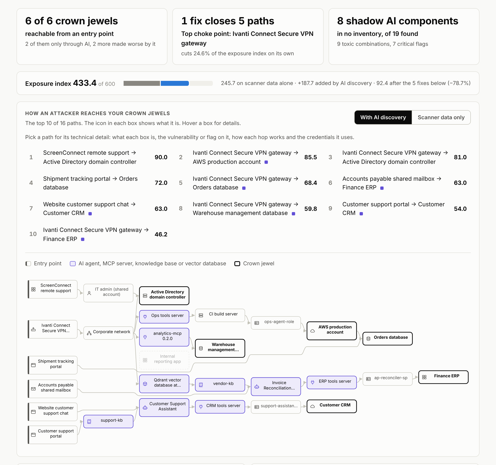

Open-source exposure management for the AI attack surface
Rank the attack paths that run through AI agents.
ai-taint-path finds the AI agents, MCP servers and knowledge bases a company runs, including the ones in no inventory. It joins them with scanner and identity data, ranks every route to a crown-jewel system, and says which fixes to make first.
-
InternetAttacker
-
exploitsNetwork applianceIvanti Connect Secure VPN gateway CVE-2024-21887 · KEV
-
network routeNetwork segmentCorporate network10.20.0.0/16
-
connects, no loginMCP serverOps tools server answers without a login
-
runs commands onServerCI build server
-
runs asAWS IAM roleops-agent-roleAdministratorAccess
-
admin ofCrown jewelAWS production account
The two violet hops exist only because discovery found the MCP server. On scanner data alone the same target scores 27.0, by a weaker route, and the path drops down the list.
What one scan of the sample company found
Halden Logistics is a fictional 4,500-person freight company. Its CVEs, KEV entries and EPSS scores are real, and its problems are planted so the results can be checked by tests.
- 433.4 of 600
- Exposure index with AI discovery. Scanner data alone shows 245.7.
- 7 of the top 10
- Attack paths run through AI components. 4 of them have no scanner route at all.
- 8 of 19
- AI components are in no inventory. Discovery raised 25 risk flags, 7 of them critical.
- 5 fixes
- Cut the exposure index by 78.7%. The first one ranks 11th on a list sorted by CVSS.

How it works
Discover
A discovery agent reads MCP client configs, sends read-only probes to hosts on an approved scope list, and reads cloud AI platform exports. It lists every agent, MCP server, knowledge base and vector database, and flags the risky ones: no login, high-impact tools, hidden instructions in a tool description, a poisoned document.
Rank
A prioritization engine joins that inventory with scanner, CMDB and identity data and builds a graph from internet-facing entry points to crown jewels. Each path gets a score and its reasons, using CISA KEV and EPSS, with the ATT&CK, ATLAS and OWASP entries each hop maps to.
Fix
The fix plan re-scores every path after each fix, so the list is ordered by exposure removed and not by severity. Results come as a dashboard and as JSON with a published schema, ready for ticketing and SOAR.
Discovery only asks a server to describe itself. It never calls a tool, never writes, never stores a secret value, and never contacts a host outside the scope list.
What is in the project
Live demo
The dashboard for the sample company, as one self-contained page. A guided tour walks through it in 16 steps, from the headline numbers to a single attack path and the fix plan.
Take the guided tourOpen the demoCode
Python with no runtime dependencies, more than 130 automated tests and an MIT licence. The README covers the scoring model, the safety rules and the sample data.
View the code on GitHubPRD and GTM brief
The product case: the problem, buyers and users, MVP scope, competitive landscape, positioning, packaging and pricing, success metrics and risks.
Read the briefDownload the PDF
Built so far, and what comes next
Built
- Discovery agent, rule-based by default, with an optional Claude mode that chooses which leads to probe
- Prioritization engine with explainable scores, choke points and a re-scored fix plan
- JSON output with a versioned schema
- Dashboard with attack paths in technical detail, toxic combinations and an AI bill of materials
- Guided tour of the demo
Next
- Analyst agent that explains the top risks, drafts remediation tickets and writes a one-page board brief
- REST API with an OpenAPI spec
- Signed webhook and an example SOAR playbook
About
Built by Yaron Shumunov with Claude Code. The product decisions are Yaron's: the buyer, the route to market, the positioning, the pricing model and the scope. Claude wrote most of the code.